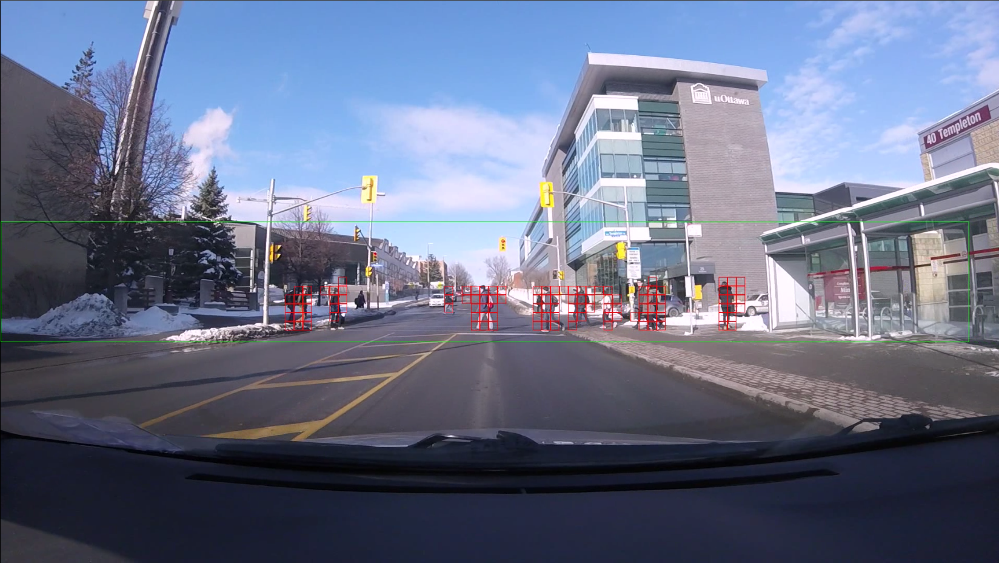
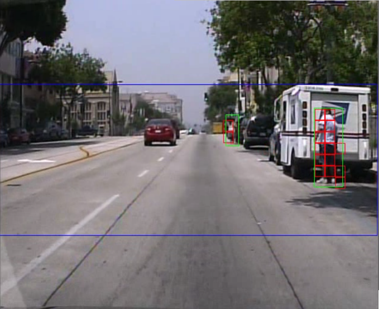
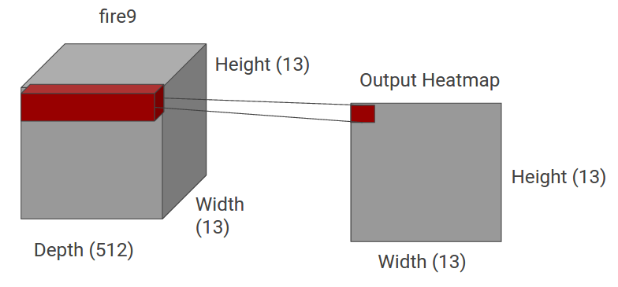
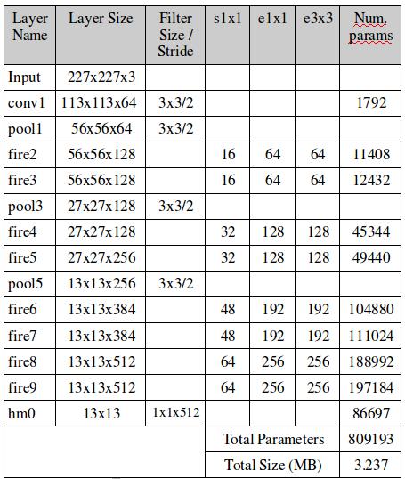
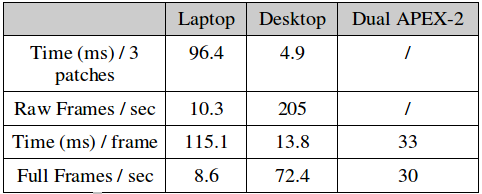
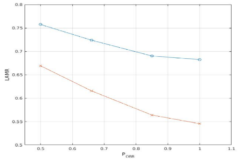
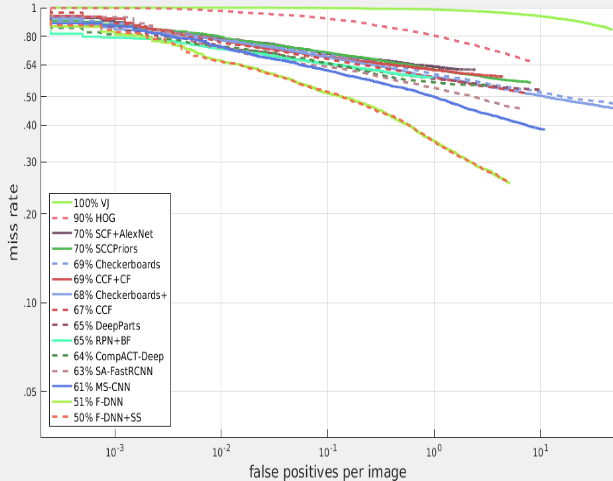

SqueezeMap: Fast Pedestrian Detection on a Low-power Automotive Processor Using Efficient Convolutional Neural Networks
| Rytis Verbickas, Robert Laganiere University of Ottawa Ottawa, ON, Canada |
Daniel Laroche, Changyun Zhu, Xiaoyin Xu, Ali Ors NXP Semiconductors Ottawa, ON, Canada |
|---|---|
| Questions? Drop us a line | |
Overview
Pedestrian detection for autonomous driving is a challenging task that requires careful trade-off between accuracy, storage, computation and energy requirements. Detection models deployed on an embedded system in an autonomous vehicle have to be:
- small in size to fit on resource restricted hardware and to be updated easily over networks with speed and capacity constraints
- computationally light, to minimize power consumption, but with a low miss rate while keeping false positives small
- fast to ensure safe operation, allowing enough time to perform detection, notification and avoidance
- small with a tiny model size of 3.24MB; roughly the size of a single song in an MP3 file
- comparable in overall miss rate to other competing models on the same dataset
- easily runs at 30 frames per second on an automotive processor within a power envelope of 2W
Click here for more
Demos
The following is a video and example image of our model applied to an unseen video sequence. The sequence was captured around the University of Ottawa campus. This model was constructed using the Caltech USA training set, and has never seen snow, winter jackets or hats. The green boundary annotated in the video and image is the region within which the network is applied, and corresponds to our main region of interest (ROI). For best viewing, use the "Full Screen" option at the bottom right of the video. Due to privacy concerns, the video has been cropped to remove parts with discernible faces.

Additional examples outputs from different sequences and datasets is shown below (note the ROI outline is blue in these).

Background
In the era of autonomous vehicles and smart assist vehicle computers, a robust and above all safe driving system requires a model which can create an accurate representation of the environment. Such systems rely on sensors for its input, which can include laser, radar or camera based solutions. Unlike laser and radar solutions which can cost thousands of dollaras, camera solutions offer a cheap and simple input source for such systems.
The wide availability of camera based pedestrian and traffic data is also helpful, allowing researchers to design models instead of collecting datasets. A number of pedestrian detection focused datasets have become available in recent years, the most popular among them arguably the Caltech-USA dataset which provides video sequences with annotations of pedestrian locations using bounding boxes. While a number of solutions have been built such as R-CNN, Fast-RCNN, Faster-RCNN and YOLO with corresponding trade-offs, they all rely on bounding boxes which we want to avoid having to compute exact pixel-wise locations for and focus on a coarse approximation.
Instead our extension relies on the observation that precise knowledge of bounding box corners are not necessary to know the location of pedestrians and their approximate size. Rather, a coarse grid based localization is proposed and acts as a kind of heatmap of pedestrian locations, relying on only one forward pass through a convolutional neural network (CNN). The number of new free parameters introduced is small relative to the original SqueezeNet model. In fact our final model is smaller (3.24MB) than the original SqueezeNet model (4.8MB).
An example of our coarse grid is shown below. The left image shows an image from the Caltech USA dataset, with the bounding boxes indicating pedestrians drawn in green. We overlay our grid (red) on top and intersect the bounding boxes with the grid. The result is a set of gridboxes which we expect to be 'on' if pedestrian features are detected inside and 'off' otherwise. This resulting grid is shown in the right image.
The output layer of our network uses a partially connected (PC) layer of neurons to save parameters. Fully connected layers can drastically increase the size of a neural network and a large amount of the parameters can be pruned (sometimes up to 90%). The PC layer connects across the depth dimension in the previous layer, performing a kind of weighted voting for each output pixel (which corresponds to one of the gridboxes shown earlier) as to whether to turn 'on' or 'off' to indicate the presence or absence of a pedestrian in that gridbox. The concept is shown below.

The final summary of parameters is as follows (there is an additional 2 parameters not shown in the table for computing a batch normalization before the output layer). The name of each network layer and/or module is shown along with the size of its output, used filter size, number of parameters and additional information (similar to the original SqueezeNet paper).

Performance
We evaluate the run-time performance of our final model on a 681x227 input image on 3 different systems:
- a standard laptop with an i3-6100U @ 2.3GHz, 16GB of RAM and a Samsung 850 EVO SSD
- a desktop with an i7-4790 @ 3.6GHz, 24GB of RAM, a Samsung 850 EVO SSD and a high end GTX Titan X GPU
- an S32V234 automotive processor manufactured by our industry partner NXP

Although we do not compute bounding boxes, we still want to estimate our performance relative to other approaches on the Caltech USA dataset. Our evaluation procedure introduces a number of parameters that can be adjusted to make the evaluation more or less difficult relative to the original evaluation procedure. This gives us a kind of band of worst and best performance within which our method should fall. This is shown below, with the vertical axis representing the (log average) miss rate while the horizontal axis denotes the percentage overlap an 'on' gridbox and ground truth bounding box must have to be considered a true positive (our target value is ~50%). The 'difficult' evaluation if the top (blue) curve and the easier one is the bottom (red) curve.

At the 50% target, our model obtains a log average miss rate of 71.2% on the entire Caltech USA training dataset. The performance curves of a range of competing models on the same dataset is shown below. Typicaly performance values are ~65% log average miss rate, however many of these approaches are not real time (unless run on high end GPU systems) or have significantly larger model sizes (up to hundreds of MB's).

Navigation
Industry Partners
Thank you to NXP Semiconductor for making this work possible!